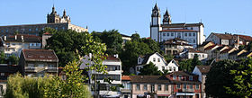

Viseu é uma cidade portuguesa pertencente à região Centro com cerca de 99 274 habitantes, sendo a segunda maior cidade do centro de Portugal, a seguir a Coimbra. É também capital do distrito com o mesmo nome. É sede de um concelho com 507,10 km² de área e 99 274 habitantes (2011), dividido em 25 freguesias. Este é limitado a norte pelo concelho de Castro Daire, a nordeste por Vila Nova de Paiva, a leste por Sátão e Penalva do Castelo, a sudeste por Mangualde e Nelas, a sul por Carregal do Sal, a sudoeste por Tondela, a oeste por Vouzela e a noroeste por São Pedro do Sul. Para além de sede de distrito e de concelho, Viseu é igualmente sede de diocese e de comarca.
Segundo um inquérito de opinião organizado pela DECO de 2007 sobre qualidade de vida, Viseu é a 17ª. cidade europeia com maior qualidade de vida entre as 76 do estudo, sendo ainda a primeira das 18 cidades capitais de distrito portuguesas com melhor qualidade de vida. Em 2012 foi considerada, mais uma vez, a cidade portuguesa com melhor qualidade de vida. 2017 é o ano oficial para visitar Viseu .
Viseu tem sido apropriadamente chamada Cidade do Verde Pinho, pois está rodeada de imensos pinheirais. Hoje em dia espécies invasoras exóticas, como os eucaliptos e as mimosas, são mais abundantes. Subsistem, no entanto, extensas manchas de vegetação autóctone, especialmente soutos de castanheiros e carvalhos-negral. Em núcleos restritos, como a Mata do Fontelo, o Parque Aquilino Ribeiro ou a Quinta da Cruz, existem espécies exóticas e endémicas, conferindo à cidade um manto vegetal luxuriante.
Viseu, como cidade localizada no encaixe entre o Norte e o Centro de Portugal, e "enclausurada" pelas Serras do Caramulo, Buçaco, Estrela, Leomil e Montemuro, tem um clima mediterrânico com influência continental e marítima. O seu clima é caracterizado por invernos frescos a frios, com temperaturas médias mensais entre os 6°C e os 9 a 10°C, húmidos, com uma precipitação total de cerca de 499,4 mm, e relativamente ventosos, em especial no mês de Janeiro. A primavera é amena, com alguma precipitação, concentrada nos primeiro dois meses, máxima que podem tocar os 28 a 30°C e mínima que vão desde os 3 a 5°C até os 15°C, em dias de muito calor diurno. O verão é quente e seco, com máximas entre os 22 a 25°C e os 30 a 33°C, mínima entre os 12 e os 25°C. O Outono é húmido e fresco, com bastante precipitação e concentrada nos últimos dois meses da estação. As temperaturas vão desde a mínima na ordem dos 4 a 15°C, ou mais nos dias de Setembro e máxima que podem ir aos 30°C em Setembro e os 15°C no fim de Novembro.
